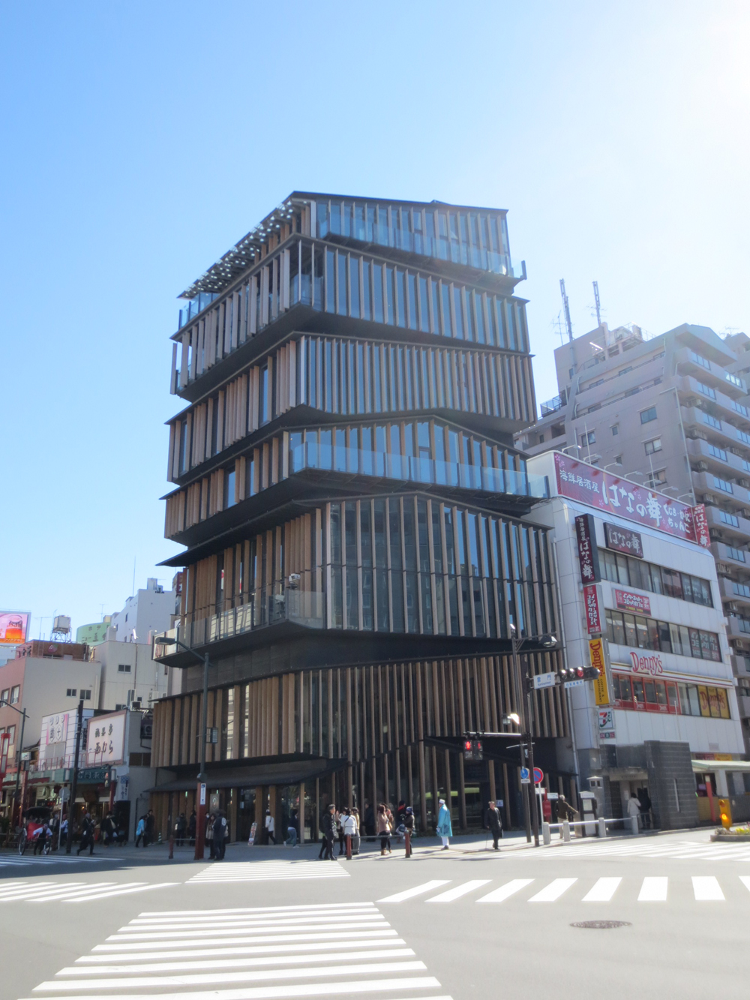

العادات والتقاليد السعودية
2020.11.13 14:29
Call Us: +966 9200 33342 المملكة العربية السعودية دولي حمل تطبيقنا غرفتي. كوم أبها أجنحة فندقية في أبها الطائف تبوك أجنحة فندقية في تابوك المنطقة الشرقية الخبر الدمام الرياض اجنحه فندقيه بالرياض جدة اجنحه فندقيه بجده المملكة العربية السعودية جازان ينبع شقق فندقية في السعودية الإمارات العربية المتحدة دبي
العادات والتقاليد السعودية
Posted on April 28, 2017 May 23, 2017 by Gurfati Blogتعتبر المملكة العربية السعودية غنية ثقافياً حيث أن لها بعض العادات تعود الى قرون. وبالرغم من أن بعض العادات أصبحت قابلة للتغيير والتطوير، الى ان التمسك بأصالة التقاليد القديمة مهم حفاظاً على الجذور العربية
أصبحت المملكة العربية السعودية اليوم متطورة وعصرية ولكنها مازالت متمسكة بقيمها الدينية الإسلامية والأعراف القديمة والتي من المتوقع على الضيوف احترامها وتقديرها
على الرغم من أن الثقافة السعودية تقليدية وعميقة ولكن السعوديين يصفون أنفسهم بأنهم يحبون الحياة وعيش كل لحظة فيها
تعتبر الأسرة هي المؤسسة الاجتماعية الأهم في حياة السعوديين حيث أن الروابط الاسرية في السعودية قوية جدا ومتينة ومبنية على الطاعة والاحترام المتبادل. كما يعرف الشعب السعودي بولائه لأهله وأصدقائه وعمله
احجزوا شقق مفروشة في المملكة العربية السعودية
من اهم ما يميز الشعب السعودي تكاتفه وقت الأزمات والتعاون فيما بينهم في السراء والضراء. السعوديون أيضا يهتمون للغاية بتاريخ اجدادهم وقبائلهم ويأخذون الالتزامات والعلاقات فيما بينهم بكل جدية
العرب اجمالاً من الشعوب المتسامحة جداً وأهل الوفاء والكرم. فهم يرحبون بمن يفهم ثقافتهم وحضارتهم ويحترم عاداتهم وتقاليدهم. وإذا التقوا بأحد الزوار الغير ملمين بعاداتهم التراثية، فالشعب السعودي سيطلعهم على العادات والتقاليد السعودية بكل ترحيب وضيافة
السلام السعودي رسمي وتقليدي ولكنه يظهر الود والحب والاحترام. يليه السؤال على الصحة والاحوال للاطمئنان على الاهل والأصدقاء. عند مقابلة الرجال لبعضهم ولأول مرة، سيتصافحون بحرارة. ولكن عندما يكونوا أصدقاء مقربين او أحد افراد العائلة، فيكون السلام عن طريق المصافحة بالإضافة الى السلام على الخدين. بينما النساء يميلون الى اظهار المحبة والود من خلال المعانقة
يعتبر كرم الضيافة من سمات السعوديين. لذلك هم يبذلون قصارى جهدهم لإكرام ضيوفهم الأعزاء عن طريق استضافتهم في منازلهم للترحيب بهم. ويتم استقبالهم بالقهوة العربية وأجود أنواع التمور بينما يتبادلون الحديث. ثم يعدون وليمة العشاء الغنية بالأكلات الشعبية منها الكبسة السعودية الشهيرة بجانب العديد من الاطباق الأخرى
إذا دعيت إلى منزل السعودي لتناول العشاء، فمن المهم أن تحضر في موعدك وترتدي ما يناسب التقاليد العربية. تذكر ازالة حذائك عند الدخول إلى المنزل. يسود الجو الحفاوة والترحيب والتحدث في الأمور العامة. وبعض العوائل يفضلون عدم التحدث اثناء تناول العشاء والاستمتاع بالأكل
الضيافة جزء مهم من الثقافة السعودية. ويفضل قبول الضيافة المقدمة من قبل المضيف. كما ينصح بالأكل باليد اليمنى وفقا لعادات السعوديين ووفقا للدين الإسلامي
إذا كنت من محبي الاستكشاف وتحلم بخوض التجربة والتعرف على الثقافة السعودية، احجزوا شقتكم المفروشة عبر غرفتي.كوم. اختاروا الشقة المفروشة التي تلائم احتياجاتك. زوروا غرفتي.كوم وخططوا لرحلتك وانعموا بسفر مريح وممتع
حملوا تطبيقنا الآن على أجهزتكم ( ايفون – اندرويد ) واحجزوا مكان اقامتكم في أي مكان واي وقت
تابعونا على الفيسبوك و تويتر و انستقرام و لنكد ان
احجزوا شقق مفروشة في الرياض احجزوا شقق مفروشة في جدة
Comments
comments
Related
Posted in Uncategorized , المملكة العربية السعودية Tagged Arab Culture , Customs of KSA , Saudi tourism , Traditions , traveller , التقاليد السعودية , السعودية , العادات السعودية , المملكة العربية السعوديةPost navigation
أبها الدليل السياحي أفضل ٥ شقق مفروشة في المنطقة الشرقية3 thoughts on “ العادات والتقاليد السعودية ”
Pingback: أفضل ٥ شقق مفروشة في الرياض Pingback: شهر رمضان المبارك Pingback: الاحتفال بتوحيد المملكة - اليوم الوطني السعوديLeave a Reply Cancel reply
You must be logged in to post a comment.
Translate
Recent Posts
مهرجان دبي للتسوق 2018 من الحلي إلى الدبابات الكسوف الكلي للشمس ٢٠١٧ أول كسوف كلي للشمس منذ 99 عاماً Dubai Shopping Festival 2018 From Trinkets To Tanks The Islands Of Saudi Arabia Farasan Islands And Passport Island Hot Water Springs Healing And More Hidden In The WildernessPopular Topics
Abha Arab Culture Arab tourism Customs of KSA Dammam eastern province furnished apartments furnished apartments in Abha furnished apartments KSA international jeddah Jeddah tourism KSA riyadh Riyadh attractions Saudi arabia Saudi culture Saudi Heritage Saudi tourism Saudi travel tourism Traditions travel traveller united nations world أبها الخبر الدمام الرياض السعودية السياحة السعودية الشقق المفروشة في مدينة الخبر المنطقة الشرقية جدة رمضان رمضان المبارك رمضان كريم سياحة العرب شقة مفروشة في الرياض شقق مفروشة شقق مفروشة في أبها شقق مفروشة في الدمام شقق مفروشة في الرياض شقق مفروشة في جدةArchives
February 2018 (2) January 2018 (2) December 2017 (1) November 2017 (9) October 2017 (10) September 2017 (15) August 2017 (19) July 2017 (16) June 2017 (22) May 2017 (17) April 2017 (17) March 2017 (17)Like us on Facebook
Like us on FacebookSubscribe For Latest Posts
RSS - Posts
RSS - Comments
Jeddah, Saudi Arabia © 2016-2017, Gurfati.com من نحن حمل تطبيقنا اعلانات الفيديو تواصل معنا سياسة الخصوصية الرئيسية رؤية ٢٠٣٠ الشقق المفروشة